Làm việc trong lĩnh vực Social Media & Truyền thông Đa phương tiện
Mình có 2 năm kinh nghiệm làm việc trong môi trường Báo chí và 1 năm thực tế trong môi trường doanh nghiệp.
Thế mạnh của mình là Quản lý Social Media & Sản xuất nội dung đa nền tảng (Video, Bài viết, Podcast), cùng khả năng lập kế hoạch và vận hành quảng cáo Facebook.
Ưu tiên của mình là được đóng góp vào những công việc mang lại giá trị tích cực: "lợi mình, lợi người, lợi thiên nhiên".
Học viện Báo chí và Tuyên truyền
2020 - 2024Lên kế hoạch truyền thông Facebook, TikTok. Chạy Facebook Ads (cơ bản), thực hiện A/B Testing, phân tích số liệu và tối ưu hóa chi phí (CPL).
Xây dựng hệ thống chiến lược nội dung (Content Playbook) bài bản. Lên kế hoạch nội dung định kỳ; viết kịch bản, thiết kế hook video và ứng dụng kỹ năng kể chuyện (Storytelling).
Quay phim, dựng Video (Capcut), và xử lý âm thanh/Podcast (Audition).
Xây dựng workflow hiệu quả, ứng dụng AI để thiết kế các ấn phẩm social, banner, poster sự kiện nổi bật.
Nhiệm vụ: Lên kế hoạch và thực thi nội dung Social Media phục vụ mục tiêu tuyển sinh. Viết kịch bản, quay dựng short video, vlog trên Fanpage/TikTok. Quản lý ngân sách quảng cáo (~10 triệu/tháng).
Ngân sách tối ưu (4.5 tháng)
Lượt tiếp cận
Leads (Tin nhắn & Form)
Duy trì quảng cáo dài hạn với tổng chi tiêu 27.1 triệu VNĐ, giữ mức giá thầu ổn định và mang về 737 Leads với chi phí ~36.700 VNĐ/Lead.
Phát hiện định dạng quảng cáo truyền thống có chi phí cao (~457.000 VNĐ/Lead), chủ động thử nghiệm đổi sang định dạng Vlog Storytelling, giúp giảm CPL xuống hơn 10 lần.
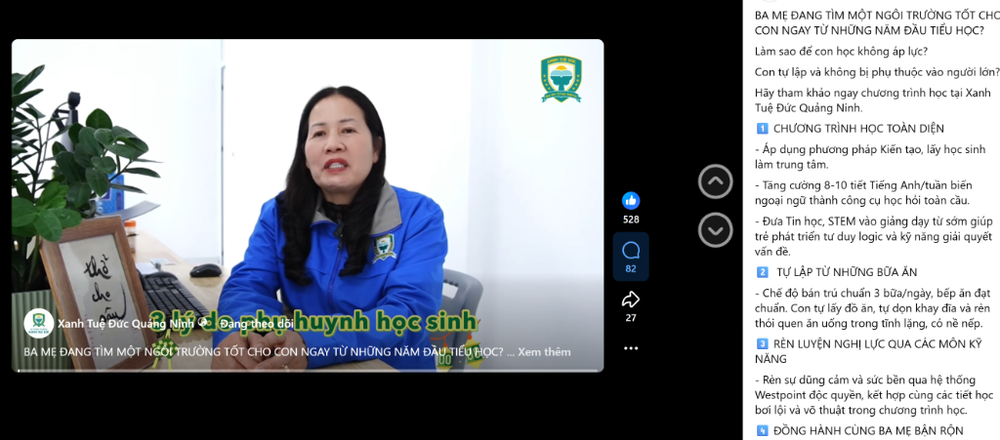
Nội dung giới thiệu trường lớp khô khan, thiếu điểm chạm, khiến quảng cáo bị đắt và không ra chuyển đổi.
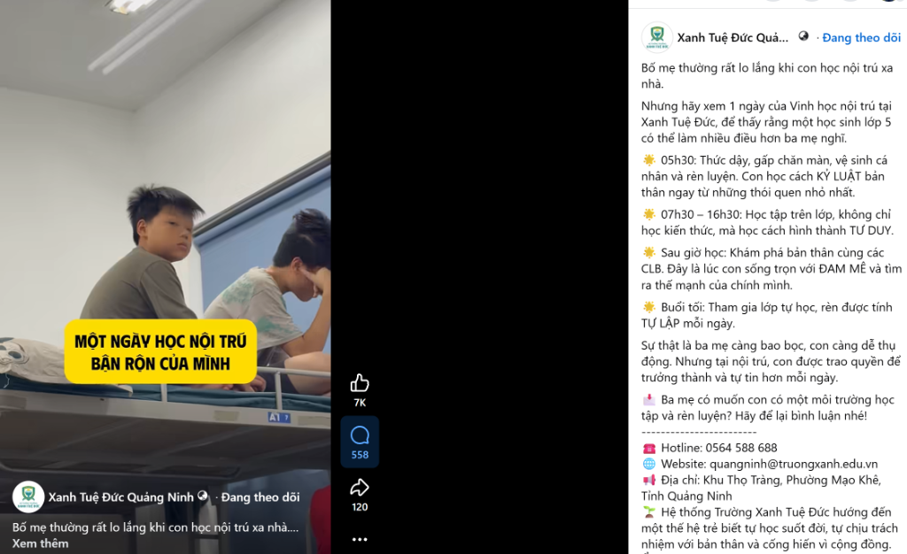
Nội dung kể chuyện chân thực, đánh trúng tâm lý thấu cảm của khách hàng, cứu vãn ngân sách.
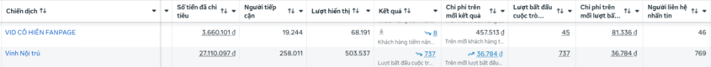
"Dữ liệu thực tế cho thấy sự chênh lệch rõ ràng: Chiến dịch truyền thống "Cô Hiền" tiêu tốn đến 457.513đ cho mỗi kết quả, trong khi tuyến nội dung Storytelling "Vinh Nội Trú" đạt tỷ lệ chuyển đổi xuất sắc với chỉ 36.784đ. Việc liên tục đo lường và theo dõi dữ liệu giúp mình kịp thời cắt giảm quảng cáo đắt đỏ và dồn ngân sách vào các định dạng tối ưu nhất."
Sản xuất định kỳ các video ngắn, tạo ra lượng tương tác khổng lồ hoàn toàn tự nhiên (0 đồng chi phí Ads). Sở hữu 10 video vượt mốc 100K view, 15 video trên 50K view và hơn 45 video trên 10K view.
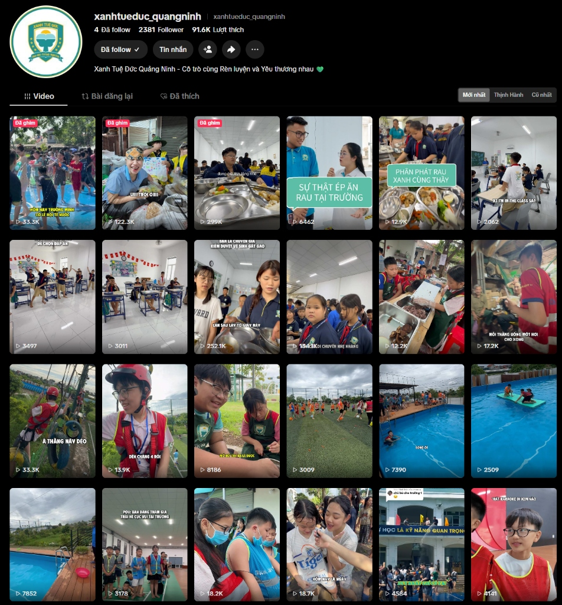
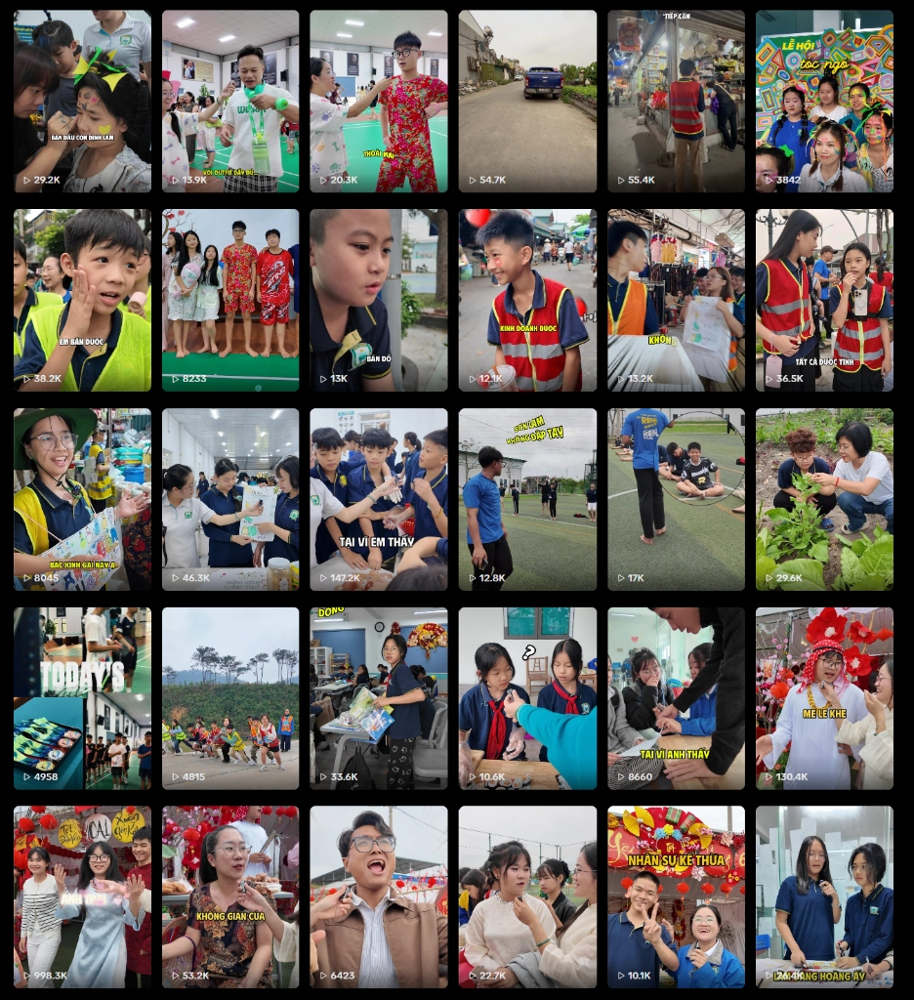
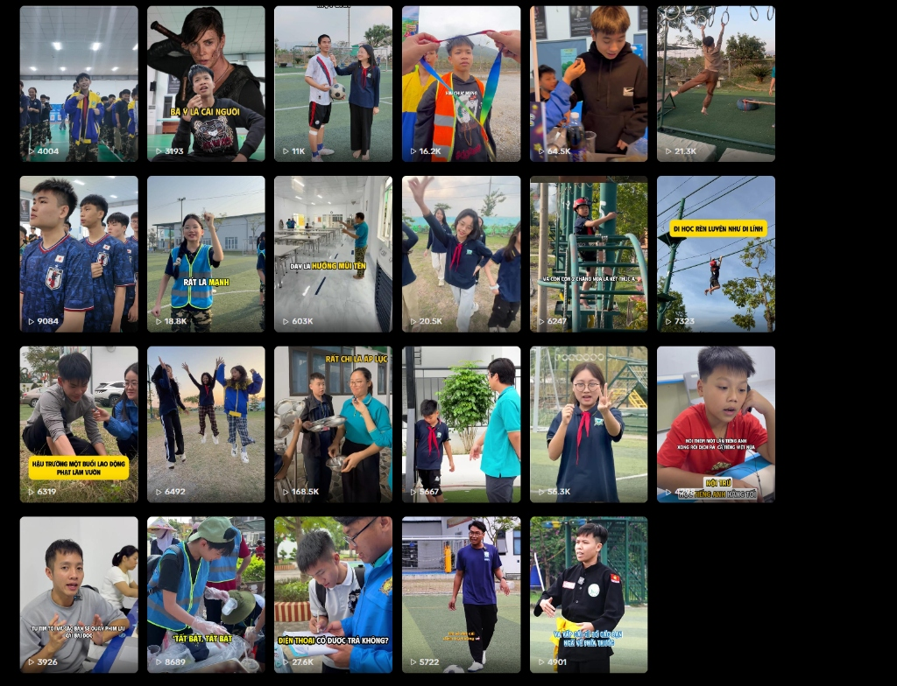
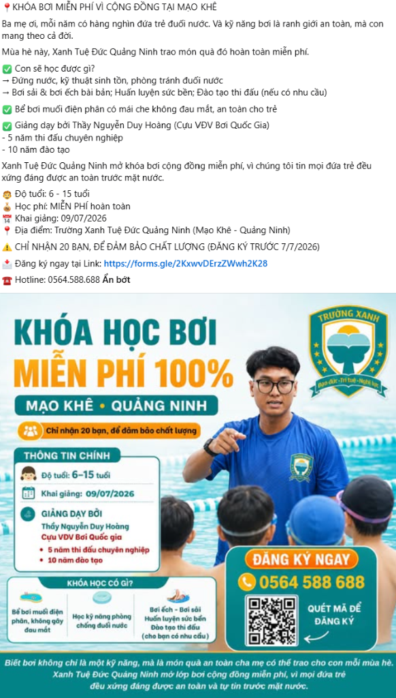
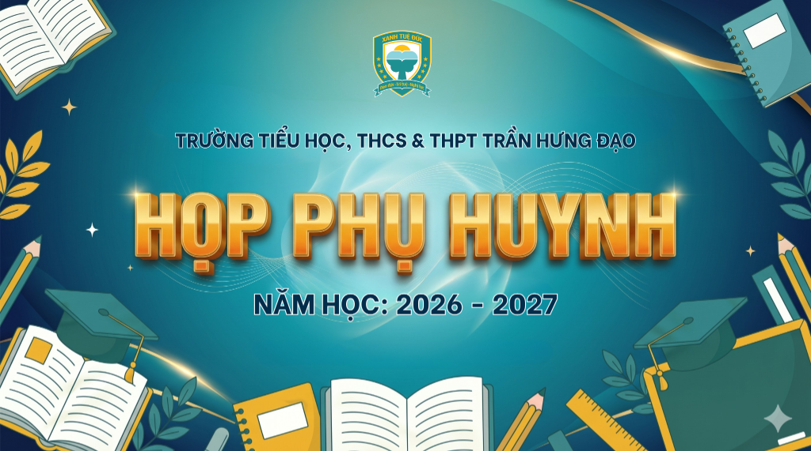
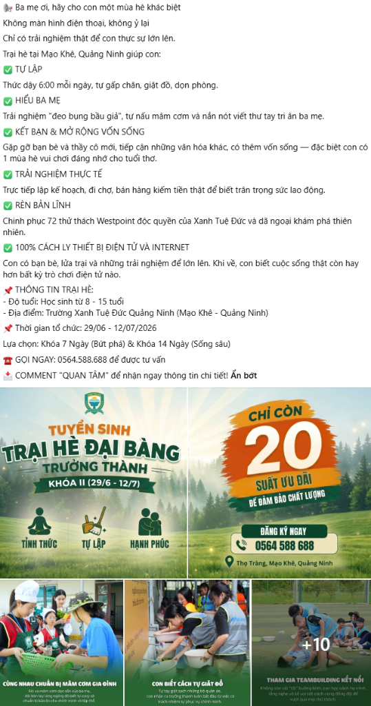
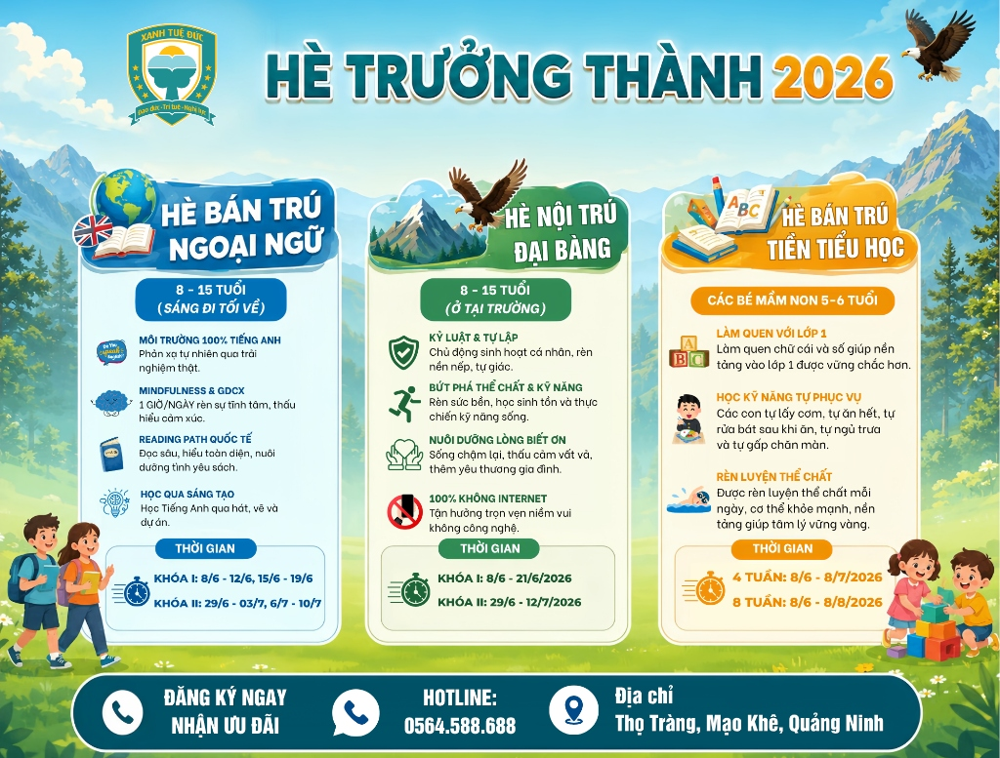
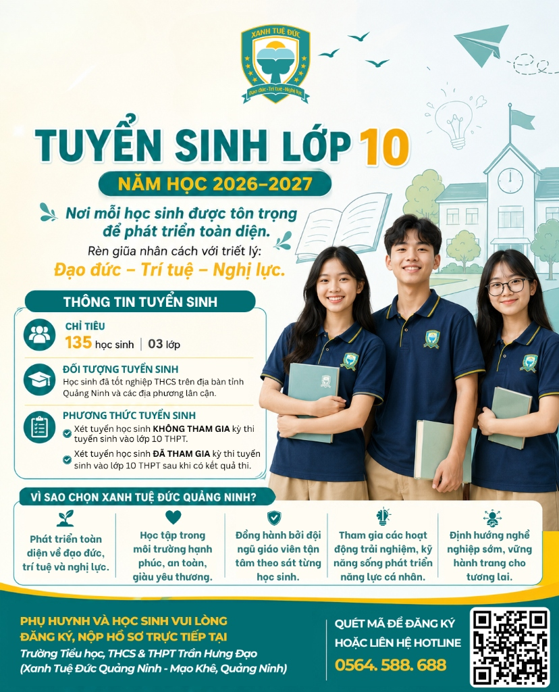
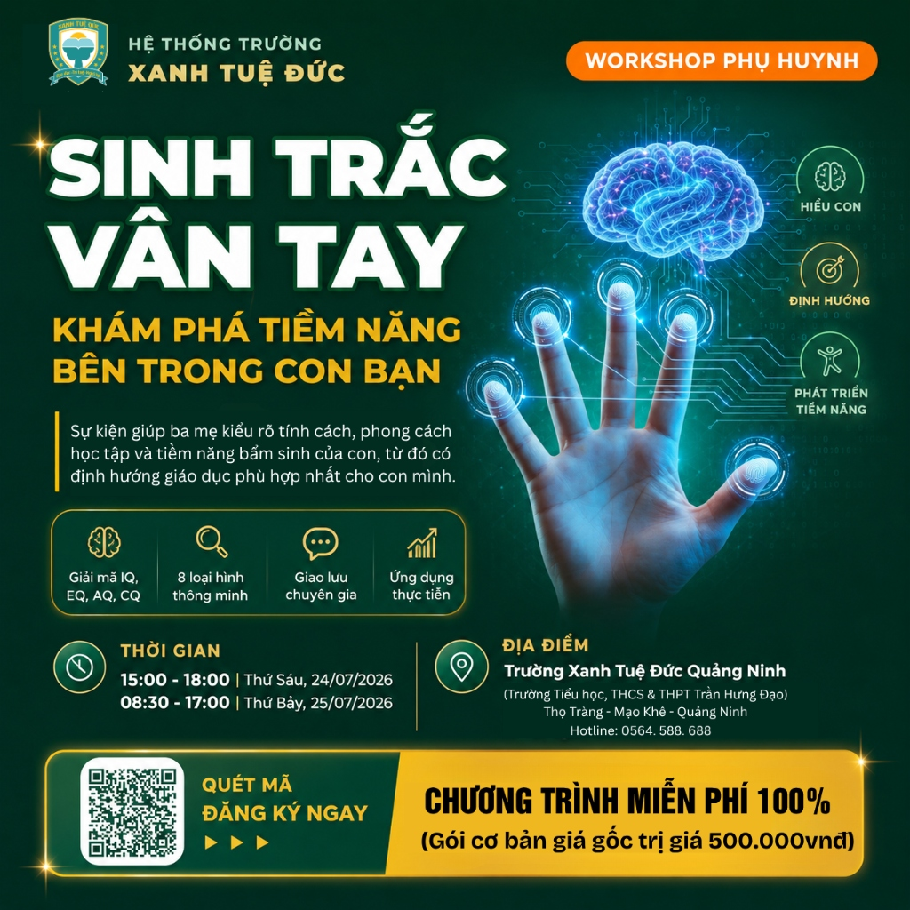
Sản xuất các ấn phẩm báo chí số hóa (Phát thanh, Video, Podcast). Hỗ trợ quản lý kênh YouTube: Tối ưu SEO, theo dõi Analytics và báo cáo nội dung.
Hỗ trợ sản xuất chuyên mục Podcast đời sống xã hội và các nội dung đa phương tiện khác.
Hạng mục: Video/Clip
2023Hạng mục: Báo Phát Thanh
2023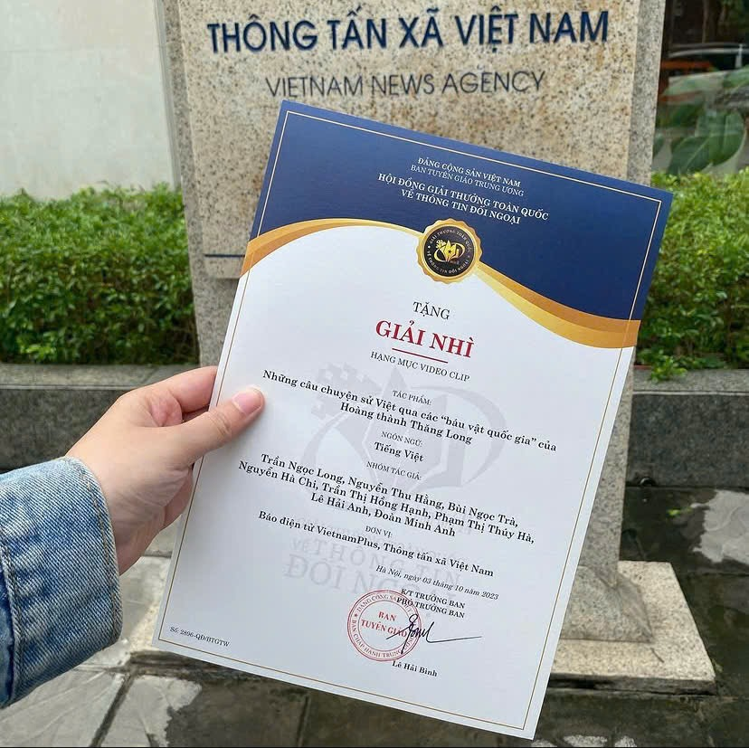
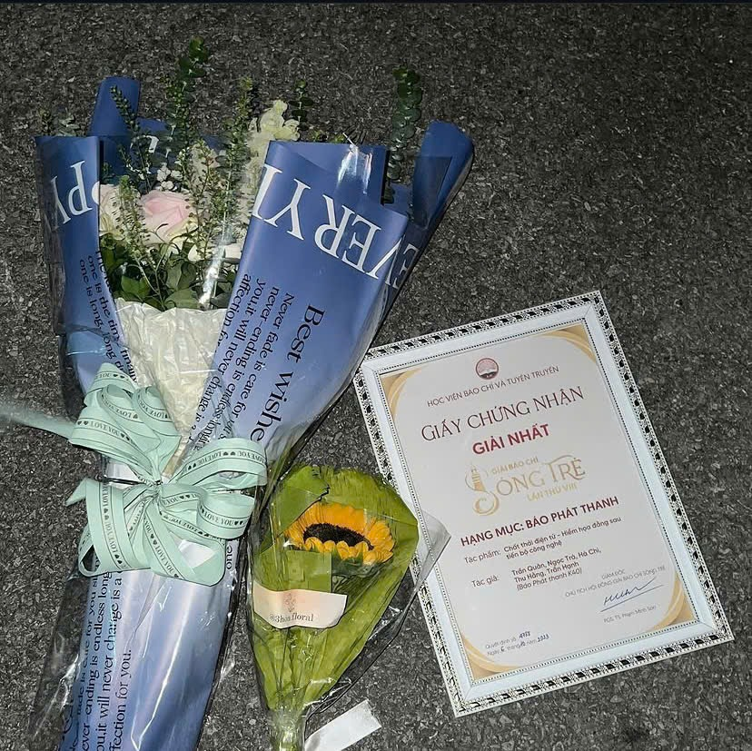
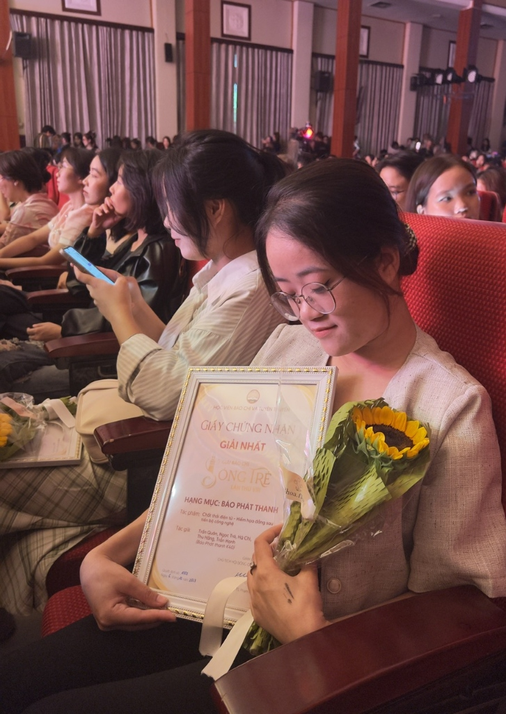